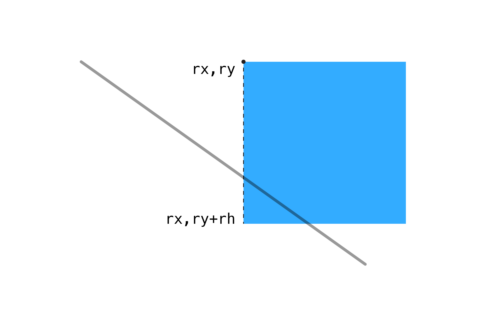
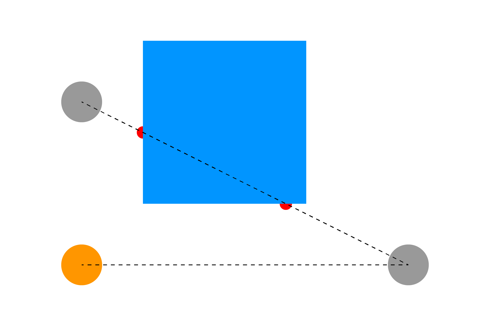

Гарна новина: ми вже знаємо все необхідне, щоб перевірити перетин лінії з прямокутником! Адже контур будь-якого прямокутника складається з чотирьох відрізків. Тому перевірка зводиться до чотирьох викликів функції collideLineLine() — по одному для кожної сторони прямокутника!
Наприклад, ліва стінка прямокутника починається у верхньому лівому куті (rx, ry) і спускається вертикально вниз до нижнього лівого кута (rx, ry + rh). Перевірити перетин нашої лінії з цією стінкою можна одним рядком:
const collidesLeft = collideLineLine(x1, y1, x2, y2, rx, ry, rx, ry + rh);Погляньте на схему, де прямокутник розкладено на чотири окремі відрізки:

Запишемо таку саму перевірку для лівої, правої, верхньої та нижньої сторін:
const collidesLeft = collideLineLine(x1, y1, x2, y2, rx, ry, rx, ry + rh);
const collidesRight = collideLineLine(x1, y1, x2, y2, rx + rw, ry, rx + rw, ry + rh);
const collidesTop = collideLineLine(x1, y1, x2, y2, rx, ry, rx + rw, ry);
const collidesBottom = collideLineLine(x1, y1, x2, y2, rx, ry + rh, rx + rw, ry + rh);Якщо хоча б одна з чотирьох сторін перетинається з нашою лінією, повертаємо true:
if (collidesLeft || collidesRight || collidesTop || collidesBottom) {
return true;
}
return false;Маленька деталь: а що, як короткий відрізок повністю опиниться всередині великого прямокутника, не торкаючись жодної з його чотирьох стінок? Якщо у вашій грі можлива така ситуація, достатньо додати ще одну перевірку collidePointRect(x1, y1, rx, ry, rw, rh) для одного з кінців відрізка!
Повний приклад коду наведено нижче. Червоні точки, які малюються всередині функції collideLineLine, наочно показують, у яких саме місцях лінія входить у прямокутник і виходить із нього. Якщо у вашому проєкті вони не потрбні, ви можете вимкнути їх у коді:
// координати відрізка з керованим кінцем
let x1 = 0;
let y1 = 0;
const x2 = 20;
const y2 = 20;
// координати та розміри прямокутника
let rx;
let ry;
const rw = 200;
const rh = 200;
function setup() {
createCanvas(window.innerWidth, window.innerHeight);
strokeWeight(5); // товщина лінії для кращої видимості
// розміщуємо прямокутник по центру полотна
rx = (width - rw) / 2;
ry = (height - rh) / 2;
}
function draw() {
background(255);
// оновлюємо один кінець відрізка координатами курсора
x1 = mouseX;
y1 = mouseY;
// перевіряємо перетин лінії з прямокутником
const isColliding = collideLineRect(x1, y1, x2, y2, rx, ry, rw, rh);
// змінюємо колір прямокутника при перетині
if (isColliding) {
fill(255, 150, 0);
} else {
fill(0, 150, 255);
}
// малюємо прямокутник
noStroke();
rect(rx, ry, rw, rh);
// малюємо лінію
stroke(0, 150);
line(x1, y1, x2, y2);
}
// перевірка на зіткнення між лінією та прямокутником
function collideLineRect(x1, y1, x2, y2, rx, ry, rw, rh) {
// перевіряємо перетин лінії з кожною із чотирьох сторін прямокутника
const collidesLeft = collideLineLine(x1, y1, x2, y2, rx, ry, rx, ry + rh);
const collidesRight = collideLineLine(x1, y1, x2, y2, rx + rw, ry, rx + rw, ry + rh);
const collidesTop = collideLineLine(x1, y1, x2, y2, rx, ry, rx + rw, ry);
const collidesBottom = collideLineLine(x1, y1, x2, y2, rx, ry + rh, rx + rw, ry + rh);
// якщо перетнуто будь-яку сторону — зіткнення відбулося
if (collidesLeft || collidesRight || collidesTop || collidesBottom) {
return true;
}
return false;
}
// перевірка на перетин між двома відрізками
function collideLineLine(x1, y1, x2, y2, x3, y3, x4, y4) {
const uA = ((x4 - x3) * (y1 - y3) - (y4 - y3) * (x1 - x3)) / ((y4 - y3) * (x2 - x1) - (x4 - x3) * (y2 - y1));
const uB = ((x2 - x1) * (y1 - y3) - (y2 - y1) * (x1 - x3)) / ((y4 - y3) * (x2 - x1) - (x4 - x3) * (y2 - y1));
// якщо uA та uB мають значення від 0 до 1, лінії перетинаються
if (uA >= 0 && uA <= 1 && uB >= 0 && uB <= 1) {
// необов’язково: малюємо маркер у точці перетину лінії зі стороною прямокутника
const intersectionX = x1 + (uA * (x2 - x1));
const intersectionY = y1 + (uA * (y2 - y1));
fill(255, 0, 0);
noStroke();
ellipse(intersectionX, intersectionY, 20, 20);
return true;
}
return false;
}Перетин лінії з прямокутником має ще одне чудове застосування у стелс-іграх та стратегіях — перевірку прямої видимості (Line of Sight). Уявіть, що на карті є охоронець, гравець і прямокутна стіна між ними. Як комп’ютерному охоронцеві зрозуміти, чи «бачить» він гравця? Дуже просто: проведіть уявну лінію від охоронця до гравця і перевірте її функцією collideLineRect()! Якщо лінія перетинає стіну — гравець у безпеці в тіні, якщо ж перетину немає — охоронець помічає ціль!

Далі: Завдання 3